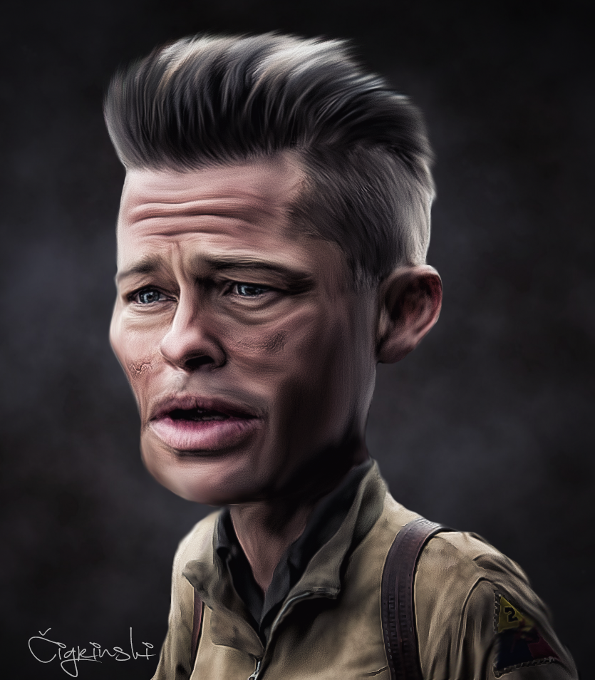
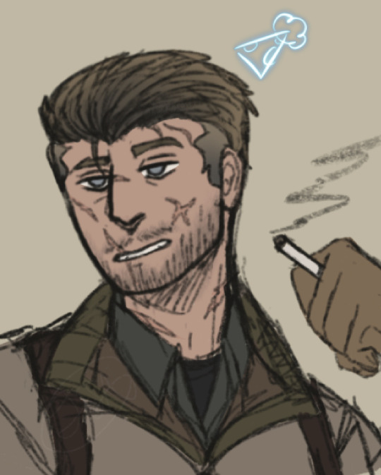

Fandom de Corações de Ferro
O filme gerou uma base de fãs dedicada que aprecia sua representação realista da guerra e o desenvolvimento profundo dos personagens. Muitos fãs participam de fóruns de discussão e eventos temáticos focados em filmes de guerra.
Há uma forte comunidade online que se reúne para debater o impacto do filme e compartilhar teorias sobre as escolhas narrativas e o simbolismo utilizado pelo diretor David Ayer. Alguns fãs recriam as cenas icônicas do filme, seja através de arte digital ou cosplay em convenções.
Fan Arts e Tributos
Os fãs de *Corações de Ferro* frequentemente produzem obras de arte inspiradas no filme. Abaixo estão algumas das melhores criações da comunidade:
 Os tributos variam de ilustrações detalhadas dos personagens a recriações das cenas mais emocionantes e poderosas do filme.
Comunidades Online
Há diversos fóruns e grupos dedicados a discutir o filme e seu impacto. Muitos fãs analisam a precisão histórica, os personagens e compartilham teorias sobre os temas explorados. Aqui estão alguns links para comunidades ativas:
Eventos de Fãs
Os fãs também organizam eventos temáticos onde recriam batalhas e cenas do filme. Esses eventos geralmente acontecem em convenções de cinema e história militar. Os participantes vestem trajes de época e utilizam réplicas de equipamentos militares usados no filme.